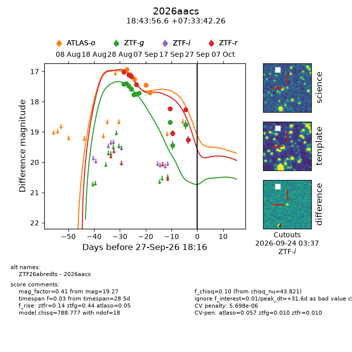
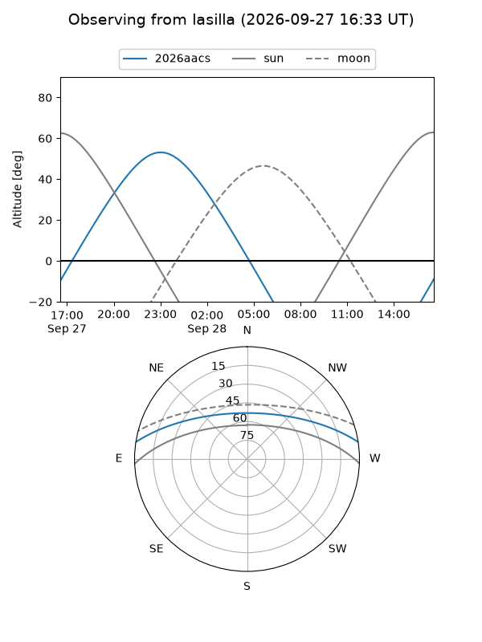
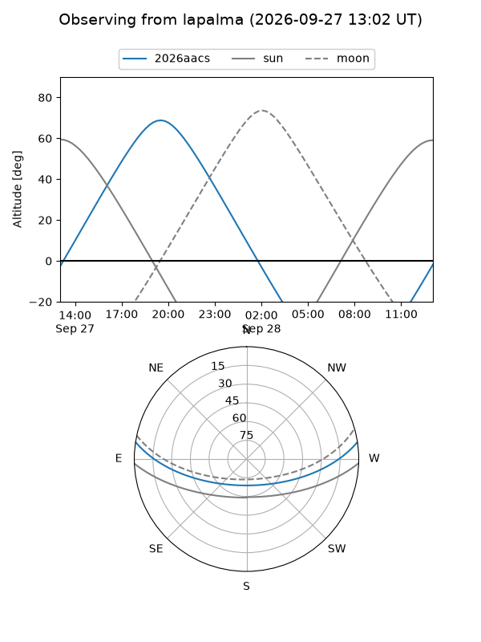
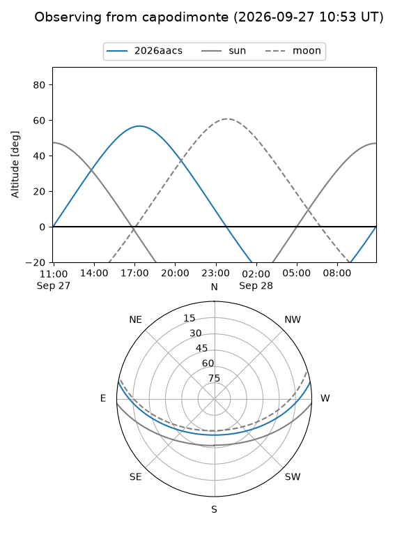
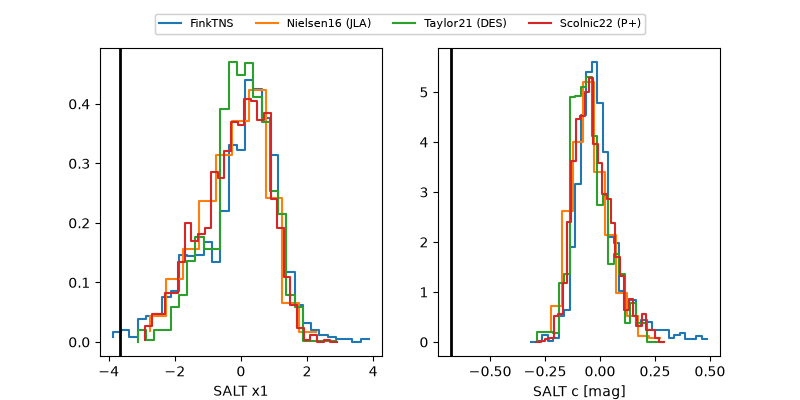

2026aacs
Target 2026aacs at 2026-09-28 05:43
Aliases and brokers:
FINK-ZTF: ztf.fink-portal.org/ZTF26abredts
Lasair-ZTF: lasair-ztf.lsst.ac.uk/objects/ZTF26abredts
ALeRCE-ZTF: alerce.online/object/ZTF26abredts
YSE-PZ: ziggy.ucolick.org/yse/transient_detail/2026aacs
TNS name: wis-tns.org/object/2026aacs
Direct TNS query: direct search
alt names
ZTF26abredts (ztf,fink_ztf)
2026aacs (tns,yse)
Coordinates:
equatorial (ra, dec) = 280.9860,+7.56174
equatorial (HMS+DMS) = 18:43:56.64,+07:33:42.26
galactic (l, b) = (38.8293,+5.09732)
Flags:
TNS type: nan
peak dt: +32.1
likely cv: !!
Photometry:
last atlaso=17.69, ztfg=18.75, ztfr=19.27
5 atlaso, 10 ztfg, 8 ztfr detections
Lightcurve

Visibility



Additional plots
